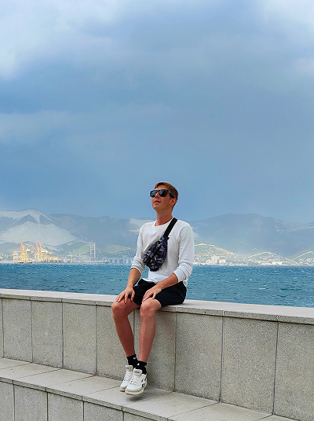

<section id="about" class="about">
    <div class="container">
        <div class="about--wrapper">
            <div class="about--img">
                
            </div>

            <div class="about--text">
                <h2 class="title-2 title-circle">Про меня</h2>
                <div class="subtitle">Меня зовут Константин</div>
                <div class="subline"></div>
                <p class="descr abous--descr">Я знаю, что многие клиенты, прежде чем сделать выбор, хотят увидеть реальные кейсы по веб-разработке, т.е. «живые» сайты. Поэтому, на этой странице я представил часть своих работ, выполненных в разное время. Глядя на них вы можете увидеть мой профессиональный рост и навыки, которыми я обладаю. Посмотрите и решите, соответствуют ли они Вашим ожиданиям, прежде чем вы решите поработать со мной.</p>

                <div class="about--skills">
                    <div class="about--block">
                        <div class="about--svg">
                            <svg class="icon--about-web-development">
                                <use href="./img/svgsprite/sprite.symbol.svg#about-web-development"></use>
                            </svg>
                        </div>

                        <div class="about--skill">
                            <div class="about--skill-title">Web-разработка</div>
                            <div class="about--skill-descr">Создание сайтов различной сложности(landing page, SPA, интернет-магазин, каталог, CMS WordPress). Адаптивный дизайн. Высокая скорость загрузки. Управление контентом.</div>
                        </div>
                    </div>

                    <div class="about--block">
                        <div class="about--svg">
                            <svg class="icon--about-mobile-dev">
                                <use href="./img/svgsprite/sprite.symbol.svg#about-mobile-dev"></use>
                            </svg>
                        </div>

                        <div class="about--skill">
                            <div class="about--skill-title">Оптимизация</div>
                            <div class="about--skill-descr">Увелечение скорости загрузки, валидности и соблюдение семантики для хорошей индексации в поисковых системах. Настройка различных сторонних плагинов, метрик и скриптов.</div>
                        </div>
                    </div>

                    <div class="about--block">
                        <div class="about--svg">
                            <svg class="icon--about-web-ux">
                                <use href="./img/svgsprite/sprite.symbol.svg#about-web-ux"></use>
                            </svg>
                        </div>

                        <div class="about--skill">
                            <div class="about--skill-title">UI/UX Design</div>
                            <div class="about--skill-descr">Создание дизайна страниц сайта, приложение. Создание дизайнерских компонентов для сайтов(слайдер, баннеры, секции) и рекламных материалов в графических редакторах для маркетинга.</div>
                        </div>
                    </div>
                </div>
            </div>
        </div>
    </div>
</section>